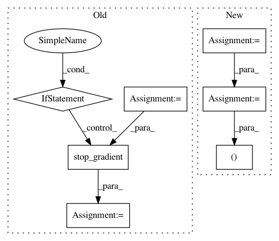

6bf3f51cd0a312da842157665663c2dad9983248,tensorflow_ranking/python/losses_impl.py,ClickEMLoss,_compute_latent_prob,#ClickEMLoss#Any#Any#Any#,914
Before Change
exam_prob_given_non_clicks = exam_prob * (1 - rel_prob) / prob_non_clicks
rel_prob_given_non_clicks = (1 - exam_prob) * rel_prob / prob_non_clicks
exam_prob_given_non_clicks, rel_prob_given_non_clicks = [
tf.stop_gradient(
tf.compat.v1.where(is_clicked, tf.ones_like(prob), prob))
for prob in [exam_prob_given_non_clicks, rel_prob_given_non_clicks]
]
return exam_prob_given_non_clicks, rel_prob_given_non_clicks
def compute_unreduced_loss(self, labels, logits):
Computes the loss for each element.
After Change
with tf.compat.v1.name_scope(name="compute_latent_prob"):
is_clicked = tf.greater_equal(tf.cast(clicks, tf.float32), 1.0)
exam_logits_posterior = exam_logits - tf.math.softplus(rel_logits)
rel_logits_posterior = rel_logits - tf.math.softplus(exam_logits)
exam_prob_posterior = tf.compat.v1.where(
is_clicked, tf.ones_like(exam_logits_posterior),
tf.sigmoid(exam_logits_posterior))
rel_prob_posterior = tf.compat.v1.where(
is_clicked, tf.ones_like(rel_logits_posterior),
tf.sigmoid(rel_logits_posterior))
return tf.stop_gradient(exam_prob_posterior), tf.stop_gradient(
rel_prob_posterior)
def compute_unreduced_loss(self, labels, logits):
In pattern: SUPERPATTERN
Frequency: 3
Non-data size: 7
Instances
Project Name: tensorflow/ranking
Commit Name: 6bf3f51cd0a312da842157665663c2dad9983248
Time: 2021-01-29
Author: xuanhui@google.com
File Name: tensorflow_ranking/python/losses_impl.py
Class Name: ClickEMLoss
Method Name: _compute_latent_prob
Project Name: reinforceio/tensorforce
Commit Name: c2c9dddf6d99bfa14b8ffb65b507a6be50b0ad6e
Time: 2018-02-08
Author: aok25@cl.cam.ac.uk
File Name: tensorforce/models/model.py
Class Name: Model
Method Name: create_observe_operations
Project Name: rail-berkeley/softlearning
Commit Name: 1ea6387f291d2f0795d1d06118586ac62e153d3a
Time: 2018-05-22
Author: kristian.hartikainen@gmail.com
File Name: sac/policies/real_nvp.py
Class Name: RealNVPPolicy
Method Name: actions_for